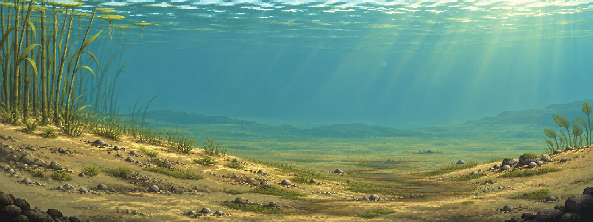
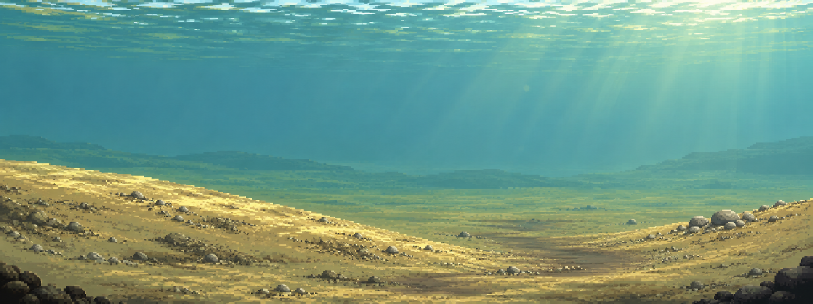

M03 / A / ROUND 02
暖光沙湾 · 芦苇与沙面群落
沿用选定的 A：左侧芦苇是主要植物形体，坡脚低草逐渐变稀；右侧只放少量宽叶植物与石面苔藻，保留开阔水道。

前后对照

植物和地势仍烘焙在同一张概念图；没有新增交互目标、碰撞或动物。此图不是游戏截图，也不是已拆分透明资源。中央留白仍需后续实机验证。
本轮报告 · 内置 image_gen 提示词 · 第一轮历史方案 · 系列进度
沿用选定的 A：左侧芦苇是主要植物形体，坡脚低草逐渐变稀；右侧只放少量宽叶植物与石面苔藻，保留开阔水道。


植物和地势仍烘焙在同一张概念图；没有新增交互目标、碰撞或动物。此图不是游戏截图，也不是已拆分透明资源。中央留白仍需后续实机验证。
本轮报告 · 内置 image_gen 提示词 · 第一轮历史方案 · 系列进度